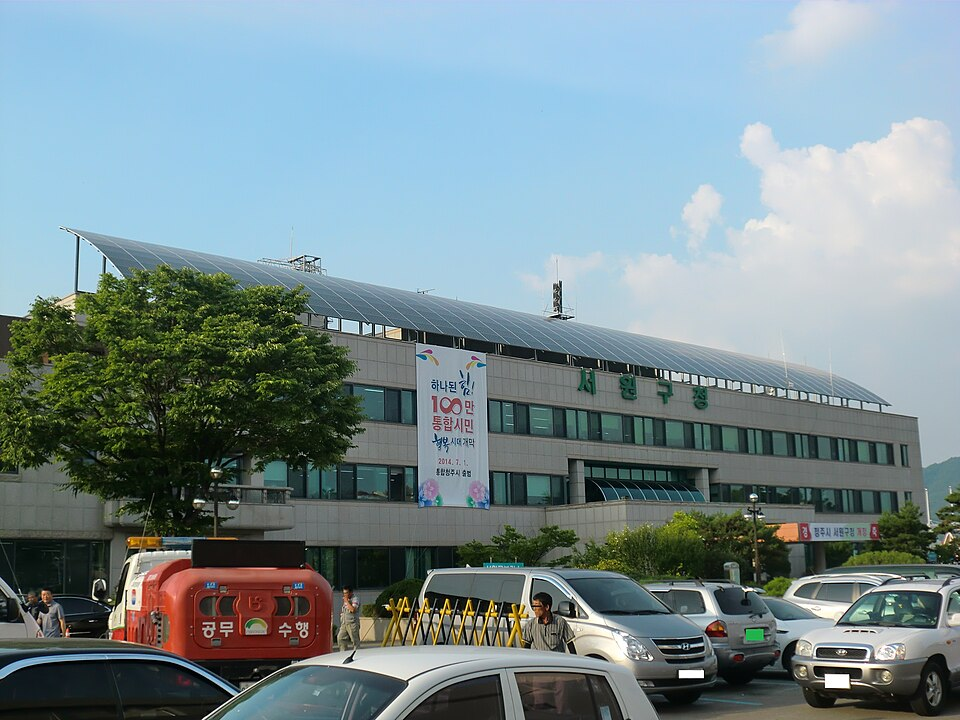

충북 청주 서원구는 관리 중인 중·고등학교만 19곳입니다. 산남고등학교·충북고등학교·운호고등학교 같은 고등학교와 산남중학교·남성중학교·세광중학교가 구 안에 흩어져 있습니다. 산남동·분평동 쪽과 현도·남이 쪽은 같은 구라도 오가는 데 시간이 드는 거리라, 저녁 시간이 학원 이동으로 통째로 묶이는 학생은 집으로 오는 1:1 수학과외나 국어과외를 따로 찾게 됩니다.
오늘은 서원구로 직접 찾아가는 선생님들 가운데 과목이 다른 두 분을 소개합니다. 한 분은 영어와 수학을 함께 보면서 학습 코칭을 병행하는 선생님, 한 분은 국어를 전공으로 오래 다뤄 온 선생님입니다.
서원구에서 중등 수학과외를 찾는 이유는 대개 진도가 아니라 태도에서 시작됩니다. 문제를 못 푸는 게 아니라 앉아 있는 시간이 안 만들어지는 경우입니다. 이 선생님은 교과 수업과 학습 코칭을 따로 두지 않고 함께 갑니다. 무엇을 언제 할지 정하는 일부터 수업 안에서 다룹니다.
영어와 수학을 모두 지도하기 때문에 두 과목을 한 선생님에게 맡기고 싶은 경우에도 맞습니다. 수학은 초등부터 고1까지, 영어는 초등부터 고3까지 봅니다. 오전 시간대에는 성인 수업과 검정고시 준비도 가능합니다. 방문 수업만 하는 선생님이라 수업은 학생 집에서 진행하고, 서원구와 상당구를 함께 방문합니다.
박ㅇ섭 선생님 상세 프로필 →서원구에서 고등 국어과외를 찾을 때 걸리는 지점은 "국어는 어떻게 가르쳐야 오르는지 모르겠다"는 것입니다. 이 선생님은 국어교육을 대학원 박사과정까지 전공했고 국어 교원자격증을 가지고 있습니다. 감으로 읽던 지문을 근거로 읽게 바꾸는 쪽에 강합니다.
국어 외에 영어·과학·사회도 지도합니다. 생물 교원자격증이 있어 과학 쪽도 함께 볼 수 있고, 사회는 중등부터 고등까지 가능합니다. 방문과 화상을 모두 하기 때문에 시간대가 맞지 않는 주에는 화상으로 돌려 수업을 비우지 않을 수 있습니다. 진로·진학 상담도 함께 진행합니다.
박ㅇ라 선생님 상세 프로필 →학교마다 진도와 시험 범위가 달라서, 학교별로 준비법을 따로 정리해 두었습니다.
👉 서원구 수학과외 선생님 · 서원구 국어과외 선생님 · 서원구 관리 학교 전체 보기